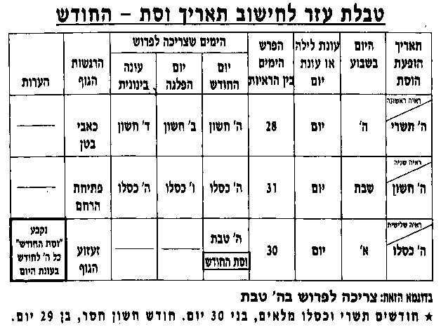

סימן א - השלבים בטהרה סימן ב' סוגי וסתות סימן ג' ימי הפרישה סימן ד' - כתמים סימן ה' - כלה סימן ו' - הלכות למעוברת סימן ז' - הלכות ליולדת סימן ח' - הלכות למינקת סימן ט' - הלכות למפלת סימן י' - הלכות לזקנה סימן יא' - מעלת הצניעות
סימן א - השלבים בטהרה סימן ב' סוגי וסתות סימן ג' ימי הפרישה סימן ד' - כתמים סימן ה' - כלה סימן ו' - הלכות למעוברת סימן ז' - הלכות ליולדת סימן ח' - הלכות למינקת סימן ט' - הלכות למפלת סימן י' - הלכות לזקנה סימן יא' - מעלת הצניעות סימן א - השלבים בטהרה
שלב א' - ימי הראיה
 סעיף 1: ימי הנדות סעיף 2: סוגי הראיות הגורמות טמאת נדה.
סעיף 1: ימי הנדות סעיף 2: סוגי הראיות הגורמות טמאת נדה.שלב ב' - הפסק בטהרה.
סעיף 1: הלכות הפסק בטהרה סעיף 2: אופן בדיקת ''הפסק בטהרה''. סעיף 3: ''מוך דחוק''שלב ג' - ספירת 7 ימים נקיים
סעיף 1: הלכות ספירת 7 ימים נקיים סעיף 2: הנהגות ביום השביעי לקראת הטבילה.שלב ד' - הרחקות
סעיף 1: התנהגות הבעל והאשה בימי טומאת הנדהשלב ה' - הכנות לטבילה במקוה.
סעיף 1: הכנות לטבילה במקוה סעיף 2: ארבעה שלבי ההכנה לטבילה סעיף 3: רשימת חפצים שיש להביא למקוה. סעיף 4: הטבילה בזמנים השונים.שלב ו' טבילה במקוה
תפלה לאשה לפני הטבילה. סעיף 1: ברכת הטבילה. סעיף 2: אפן הטבילה: סעיף 3: הלכות טבילה במקוה.סימן ב' סוגי וסתות
חיוני לכל אשה סעיף 1: סוגי וסתות סעיף 2: ''וסת קבוע'' סעיף 3: ''וסת שאינו קבוע''סימן ג' ימי הפרישה
סימן ד' - כתמים
סעיף 1: דיני כתמים סעיף 2: תנאי טומאת כתם: סעיף 3: פרטים לפני שאלת חכם סעיף 4: דברים שאינם מקבלים טומאה. סעיף 5: צבעי כתם הטהורים סעיף 6: רואה מחמת תשמישסימן ה' - כלה
תפילה לכלה ביום החופה הלכות לכלהסימן ו' - הלכות למעוברת
סימן ז' - הלכות ליולדת
סימן ח' - הלכות למינקת
סימן ט' - הלכות למפלת
סימן י' - הלכות לזקנה
סימן יא' - מעלת הצניעות
סימן א - השלבים בטהרה
שלב א' - ימי הראיה
סעיף 1: ימי הנדות
נדה היא אשה שיצא דם מרחמה, ומאותו זמן והלאה הנה נדה. כדי להטהר עליה להמתין 4 ימים עד שתהיה נקיה לגמרי מדם ומפליטת זרע שברחמה, ואם ממשיכה לראות דם לאחר 4 ימים, תמתין עד שתהיה נקיה לגמרי. ולאחר מכן עליה לעשות:
א) הפסק בטהרה.
ב) לספר 7 ימים נקיים.
ג) לטבול במקוה טהרה.
רק לאחר הטבילה במקוה טהרה היא טהורה לבעלה.
אשה כל זמן שלא טבלה במקוה טהרה כדין, הנה נדה גמורה, גם אם אינה רואה דם, והבא עליה חיב כרת. כמו כן צריכה היא לשמר על כל דיני הרחקות שיבארו בהמשך (פרק ראשון שלב ד')
אם הרגישה ביציאת הדם מרחמה, הרי היא נדה מהתורה, אפילו רואה טפת דם קטנה ביותר, גם אם סבת הראיה היא בגלל סיבה, כמו: קפיצה, התרגשות פתאומית, חימוד מחמת שראתה חיה או עוף שמתעסקים זה עם זה וכו'.
ראתה כתם על גופה או על בגדה או על הסדין, ולא הרגישה ביציאתו מרחמה, הרי היא טמאה נדה מדרבנן וזאת כאשר הכתם גדול מעט מכגריס (גדול משטח עגול בקטר 2 ס''מ).
סעיף 2: סוגי הראיות הגורמות טמאת נדה.
א) הרגישה שנפתח רחמה ובדקה ומצאה דם, טמאה מהתורה.
ב) הרגישה רעד וזעזוע בגופה, ומצאה אחר כך דם, טמאה מהתורה.
ג) הרגישה זיבת דבר לח באותו מקום, ומצאה דם, טמאה מדרבנן.
ד) הכניסה עד הבדיקה בעמק באותו מקום, ומצאה עליו דם, ספק טמאה מהתורה.
ה) קנחה עצמה בעד הבדיקה מבחוץ באותו מקום, ומצאה עליו דם, טמאה מדרבנן. (על פי תנאי טמאת כתם ).
ו) מצאה כתם על גופה, בגדה או הסדין, ולא הרגישה ביציאתו, טמאה מדרבנן. (על פי תנאי טמאת כתם) הנה למעשה חייבת כל אשה לנהוג בכל הדינים והרחקות, בין אם היא טמאה מהתורה ובין מדרבנן. אלא לפעמים כשיש ספיקות, יש הבדל ביניהם, ודוקא על פי הוראת חכם.
שלב ב' - הפסק בטהרה.
סעיף 1: הלכות הפסק בטהרה
ביום שהפסיקה לראות דם, לפני שקיעת השמש, צריכה לעשות בדיקה הנקראת ''הפסק בטהרה''.
הזמן המתאים לבדיקה הוא משעתים וחצי לפני שקיעת החמה (זמן מנחה קטנה) ועד שקיעת החמה. וטוב לעשות את בדיקת ''הפסק בטהרה'' בתוך חצי שעה קדם שקיעת החמה.
במקרים מיחדים נתן לעשות את בדיקת ''הפסק בטהרה'' בשאר שעות היום. אבל לכתחלה יש להקפיד שיהיה סמוך לשקיעת החמה.
אם עשתה בדיקת ''הפסק בטהרה'' בבקר, צריכה לחזר ולעשות שוב בדיקה לפני שקיעת החמה. ואם עבר היום ולא חזרה לבדק שוב, מועילה בדיעבד הבדיקה שעשתה בבקר.
אשה שמשך זמן ראית הדם אצלה קצר, מ - 4 ימים, או שנטמאה מחמת כתם, עושה ''הפסק בטהרה'' ביום הרביעי סמוך לשקיעת החמה. ואם רוצה לעשות ''הפסק בטהרה'' מיד כשמפסיקה לראות דם, יכולה לקנח עצמה באותו מקום בעמק יפה יפה, בעזרת מוך או בגד רך, כדי להפליט את הזרע. או תשטף עצמה בפנים באותו מקום במים חמים או תשב באמבטיה מלאה מים חמים. וטוב שתעשה את שניהם, קנוח בבגד ושטיפה במים חמים. ולאחר-מכן תעשה בדיקת ''הפסק בטהרה''.
אם עברו 4 ימים מיום ששמשה עם בעלה עד היום שרוצה לספר ''7 ימים נקיים'', ביום שמפסיקה לראות דם יכולה לעשות בדיקת ''הפסק בטהרה'', ואינה צריכה לשבת באמבטית מים חמים או לעשות שטיפה פנימית במים חמים וקנוח, כיון שאין זרע ברחמה שצריך להפליטו.
בלא בדיקת ''הפסק בטהרה'', אין האשה יכולה להתחיל לספר ''7 ימים נקיים''.
אם נמצא דם על עד הבדיקה של ''הפסק בטהרה'', יכולה האשה לשטף את אותו מקום היטב ולנגב, להמתין מספר דקות (3 עד 5 דקות), לקחת עד בדיקה אחר נקי, ולעשות בדיקה נוספת. וכן שוב ושוב עד שתמצא שעד הבדיקה יוצא נקי, וזאת עד שקיעת החמה.
כאשר עד הבדיקה מכאיב לה, מותר ללחלח אותו במים לפני הבדיקה.
בשעת הדחק אם אין לה בד לבן לבדיקת ''הפסק בטהרה'' יכולה בדיעבד להשתמש בבד צבעוני בכל צבע מלבד הצבעים אדם ושחר, ובלבד שתעיין בו היטב אחר הבדיקה, לראות שאין עליו רשם אדמימות כלל.
אשה שארע לה ששכחה לעשות בדיקת ''הפסק בטהרה'' לפני שקיעת החמה, תעשה בדיקה זו מיד בזמן של בין השמשות, שהוא תוך 13 דקות זמניות מזמן שקיעת החמה, (בימי החרף שהיום קצר הן רק 11 דקות שעון), ובדיקה זו מועילה לה בדיעבד. ותזהר להבא לעשות את בדיקת ''הפסק בטהרה'' עד שקיעת החמה.
סעיף 2: אופן בדיקת ''הפסק בטהרה''.
א) תרחץ כל גופה או לפחות באותו מקום וסביבו יפה יפה.
ב) תכרך על אצבעה בד לבן נקי רך וסופג הנקרא ''עד בדיקה'', תכניס אותו פנימה באותו מקום עמק ככל האפשר, ותסובב אצבעה תוך שנוגעת בדפנות סביב.
ג) בזמן הבדיקה טוב לעמד כאשר רגל אחת על הרצפה, ורגל שניה על כסא או שרפרף.
ד) עד הבדיקה העשוי מבד לבן רך, נקי וסופג, צריך להיות בדוק שאין עליו שום כתם, וטוב שיהיה בגודל של בערך 8 ס''מ על 8 ס''מ. ואם נח לה תשתמש בעד בגודל אחר, ובלבד שתבדק עצמה היטב.
סעיף 3: ''מוך דחוק''
לעולם נכון שתעשה לכתחלה לאחר בדיקת ''הפסק בטהרה'', בדיקה נוספת הנקראת ''מוך דחוק''. ובדיקה זו מוציאה מידי כל ספק.
לאחר שעד הבדיקה של ''הפסק בטהרה'' יצא נקי, מעט לפני שקיעת החמה, יש להכניס באותו מקום, בד אחר כמו זה של ה''הפסק בטהרה'' או צמר גפן נקי, שיהיה בפנים כל זמן בין השמשות עד מעט לאחר צאת הכוכבים. דהיינו, זמן של כעשרים דקות לאחר שקיעת החמה.
אשה שמוך דחוק גורם לה שריטות כאבים והוצאת דם באותו מקום, רשאית לעשות ''הפסק בטהרה'' בלבד, בלא ''מוך דחוק''. אבל תבדק עצמה בפנים היטב בעד הבדיקה מעט לפני שקיעת החמה.
כאשר האשה נמצאת מחוץ לביתה, טוב שתחזיק בתיק מספר ''עדי בדיקה'' כדי שתוכל לבדק עצמה, ולא תהיה דחיה בשלבי טהרתה.

שלב ג' - ספירת 7 ימים נקיים
סעיף 1: הלכות ספירת 7 ימים נקיים
תחלת ספירת ''7 ימים נקיים'' היא למחרת היום בו עשתה ''הפסק בטהרה. עליה לספר 7 ימים שלמים ורצופים.
מיד לאחר בדיקת ''הפסק בטהרה'' תלבש בגדים נקיים ובדוקים עד סוף ''7 ימים נקיים''. מנהג טוב שהבגדים הסמוכים לבשרה יהיו לבנים ונקיים, וכן תציע את מטתה בסדינים לבנים נקיים.
אשה שעלולה לראות כתמים היוצאים מגופה בלא הרגשה, תלבש בגדים צבעוניים נקיים, כדי להציל עצמה מטמאת כתם. (פרוט דיני כתמים פרק שני סימן ד')
במשך ''7 ימים נקיים'' תעשה כל יום 2 בדיקות, אחת בבקר ואחת אחר-הצהרים לפני שקיעת החמה.
אם בדקה רק פעם אחת ביום הראשון ופעם שניה ביום השביעי ובשאר הימים לא בדקה, בדיעבד רשאית לטבול ולהטהר, כיון שהמינימום ההכרחי הוא בדיקה אחת ביום הראשון ואחת ביום השביעי. (בנוסף על בדיקת ''הפסק בטהרה'' המובא בשלב ב' סעיף 1)
אשה נדה מחמת שראתה דם בהרגשה, שהחסירה ב''7 ימים נקיים'' אחת משתי הבדיקות החיוניות הללו, ובדקה רק פעם אחת ביום הראשון או רק פעם אחת ביום השביעי, חיבת לחזר ולספר מחדש ''7 ימים נקיים''.
אשה הטמאה טמאת כתם בלא הרגשה, ועשתה הפסק בטהרה, וב''7 ימים נקיים'' בדקה עצמה רק פעם אחת ביום הראשון או רק פעם אחת ביום השביעי, בדיעבד רשאית לטבול ולהטהר. וטוב שתשאל חכם.
אם הבדיקות גורמות לה שריטות וכאבים המביאים לדמום, רשאית לכתחלה לבדק רק שתי בדיקות אלו, פעם ביום הראשון ופעם ביום השביעי.
אשה שעשתה בדיקת ''מוך דחוק'' כל זמן בין השמשות לאחר בדיקת ''הפסק בטהרה'', ושכחה לבדק ביום הראשון ובדקה רק ביום השביעי, המוך הדחוק נחשב כבדיקה ביום הראשון. ולכן נחשב שבדקה פעם ביום הראשון ופעם ביום השביעי, ובדיעבד יכולה לטבול ולהטהר.
אם שכחה לעשות בדיקה לפני שקיעת החמה ביום הראשון או ביום השביעי של ''7 ימים נקיים'', (לא בדיקת ''הפסק בטהרה'' ו''מוך דחוק'' שדינם מבאר לעיל בשלב ב' סוף סעיף 1) יכולה לבדק עצמה בזמן בין השמשות. ויכולה אפלו לבדק עצמה עד שעה אחרי שקיעת החמה, שהוא זמן בין השמשות לרבנו תם. ותזהר להבא לעשות את כל הבדיקות לפני שקיעת החמה.
אשה שלא בדקה עצמה ביום הראשון, והבדיקה היתה באחד מהימים הבאים של ''7 ימים נקיים'', אותו היום שבדקה בו נחשב כיום הראשון, וממנו תתחיל לספר ''7 ימים נקיים''. ואם עשתה בדיקת ''מוך דחוק'' כל זמן בין השמשות לאחר בדיקת ''הפסק בטהרה'' ולא בדקה עצמה ביום הראשון, נחשב לה כאלו בדקה ביום הראשון, ויכולה להתחיל לספר ''7 ימים נקיים'' מהיום הראשון.
במשך ''7 ימים נקיים'' דינה של האשה כדין נדה גמורה, וצריכה להקפיד על כל דיני ההרחקות שיפרטו בהמשך (בפרק זה שלב ד'), עד שתטבל ותטהר.
אם ראתה מראה-דם-טמא באחד מ''7 ימים נקיים'', תעשה ''הפסק בטהרה'', ותספר ממחרת ''7 ימים נקיים'' מחדש.
אם ראתה מראה-דם שהוא בספק, ואינה יכולה להראותו לחכם באותו היום, תעשה בדיקת ''הפסק בטהרה'' ובדיקת ''מוך דחוק'' של בין השמשות באותו יום, וכן תמשיך לעשות את בדיקות ''7 ימים נקיים'' כרגיל. וכשתראה לחכם, אם יטהר את המראה, הרי היא ממשיכה בספירת ''7 ימים נקיים'' שהחלה בהם קדם. ואם החכם יטמא את המראה, אזי ה''הפסק בטהרה'' ובדיקת ''מוך דחוק'' החדשים שעשתה עולים לה, ומתחילה לספר ''7 ימים נקיים'' מיד למחרתם.
אשה שלא טבלה בזמן בסיום ספירת ''7 ימים נקיים'' אלא המתינה מספר-ימים נוספים, יכולה לטבול ולהטהר, ואינה צריכה לספר ''7 ימים נקיים'' מחדש.
סעיף 2: הנהגות ביום השביעי לקראת הטבילה.
משך כל היום השביעי עד הטבילה, תמנע מלהתעסק בדברים דביקים, כגון: בצק, דבק, שעוה, משחת נעלים, צבעים ומשחות, כיון שהם מהוים חציצה בטבילה.
תמנע ביום השביעי מלאכול בשר, תירס או כל דבר אחר שעלול להתקע בין השנים ולהוות חציצה בטבילה.

שלב ד' - הרחקות
סעיף 1: התנהגות הבעל והאשה בימי טומאת הנדה
אסור נדה מהתורה הנו חמור וענשו כרת. מרגע שראתה דם-וסת הנה טמאה, וצריכה להמתין שיפסיק דמה, תעשה ''הפסק בטהרה'', תספר ''7 ימים נקיים'', תטבול במקוה, ורק אחר-כך תהיה טהורה לבעלה.
מלבד אסור של יחסי אישות, שנאמר: ''ואל אשה בנדת טמאתה לא תקרב לגלות ערותה'', יש אסור כל קרבה אחרת, כמו: לישון במטה אחת אפילו בבגדים, נשוק, חבוק, נגיעה, מסירה מיד ליד וכדומה.

א) דבור
לא ישחק ולא יקל ראש עם אשתו נדה, ולא ירבה עמה בדברים בטלים, כדי שלא יבואו להרגל עברה. אבל מותר לדבר אתה בדברי משא ומתן, צרכי הבית ודברים הנחוצים בנחת ובנעימות.
ב) נגיעה
מותר להתיחד עמה בחדר אחד או בבית אחד.
מותר לשלח לה מתנות תכשיטים או פרחים.
אסור לנגוע בה אפילו באצבע קטנה, וימנע לנגוע גם בבגדים שעליה.
לא ימסר לה ולא יקבל מידה שום חפץ, אלא יניח לפניה ותקח לבד.
מותר לעזר לה להרים עגלת תינוק כבדה, שאינה יכולה להרימה לבד, ויזהר שלא יגע בה. וכל זה כאשר אי אפשר להסתיע באחרים.
במדה וצריך, מותר לזרק חפץ מידו לידה. ובלבד שלא יהיה דרך שחוק והתול.
ג) אכילה
אם אוכלים לבדם יחד על שלחן אחד, יעשו הכר ושנוי, כגון: לשים על השלחן חפץ מסים ביניהם, או כל אחד יאכל על מפה נפרדת, או ישבו ברחוק גדול ביניהם. אם יש אתם אנשים נוספים מותר בלי שנוי.
לא יאכלו מצלחת אחת או קערה אחת משתפת גם כשיש אנשים אחרים עמהם.
כאשר כל אחד נוטל מקערה משתפת לצלחתו, ואחר-כך אוכל מהצלחת, מותר ואינו נחשב אכילה מקערה אחת משתפת.
אסור לשתות משירי כוס שלה בפניה, אבל שלא בפניה מותר. ומותר להעביר את שירי המשקה לכוס אחרת ולשתות בפניה, ואין בזה אסור משום חבה. ולאשה מותר לשתות משירי כוסו של בעלה בפניו.
אין אסור לאכל משירי מאכל שאכלה אשתו, אפילו בפניה, וכן לאשה מותר לאכל משירי מאכל של בעלה בפניו.
ד) שכיבה במטה.
אסור לבעל לשכב או לשבת על מטת אשתו נדה, גם כשאינה שוכבת במטתה, וגם כשאינה נמצאת בחדר, אבל לשבת על כסא המיוחד לה מותר, אפילו בפניה.
ספה או מטה שאינה מיחדת רק לאשה בלבד, מותר לבעל לשכב עליה אפילו בפניה.
מותר לאשה נדה לשכב על מטת בעלה שלא בפניו.
אסור לבעל לכסות את אשתו בשמיכה, אפילו כשהיא ישנה, אלא יעיר אותה ותתכסה לבד.
אסור לישון במטה אחת, אפילו היא רחבה מאד, ואינם נוגעים זה בזה, גם אם הם בבגדיהם, ואפילו יש חפץ שמפסיק ביניהם אסור.
יש לישון בשתי מטות נפרדות עם שמיכות נפרדות, ולהשאיר ביניהן רוח כך שגם השמיכות לא יגעו זו בזו.
כאשר אחד מבני הזוג שוכב במטה והשני לא נמצא, אין אסור אם המטות נוגעות זו בזו.
ה) ישיבה יחד.
מותר לבעל ולאשתו נדה לשבת על ספסל אחד, אפילו שאינו קבוע ומתנדנד, ובלבד שלא יגעו זה בזו או זה בלבושה של זו.
מותר לבעל ולאשתו לנסע במכונית או עגלה או ספינה, אפילו לטיול, ולשבת זה ליד זו, גם כשהם נוסעים לבדם. ויזהרו לא לגעת זה בזו ולא זה בלבושה של זו, וטוב לשים חפץ ביניהם.
ו) ראיה, שמיעה וריח.
מותר לבעל להסתכל באשתו נדה בבגדי צבעונים ותכשיטים שעליה, בפניה ובמקומות הגלויים שבה, אפילו שנהנה מראיתו. אבל לא יסתכל דרך הנאה במקומות הצנועים שבה, שדרכה לכסות אותם, כמו: רגליה, זרועותיה מהמרפק ומעלה, ובשאר חלקי-גופה, שרגילה לכסותם.
מותר לשמוע קול אשתו כאשר שרה, וכן לשיר יחד אתה זמירות שבת.
טוב להמנע מלהריח בכוונה מבושם ששמה על עצמה.
מותר לבעל להיות נוכח בחדר הלדה, כדי להשגיח ולעודד את אשתו בלי לגעת בה אבל אסור להסתכל באותו מקום בעת יציאת הולד.
טוב שתייחד לה בגדים לימי נדתה, ואפילו הם בגדים נאים. ודי בבגד אחד, כמו חולצות או חצאיות וכדומה.
מותר לאשה להתקשט גם בימי נדותה, כדי שלא תתגנה על בעלה.
ז) תורה ותפלה.
חייבת האשה להתפלל ולברך כמו בשאר הימים בשם ומלכות, וכן ללמד ולעסוק בדברי תורה כרגיל, ומותרת לנגוע בספרי הקדש.
מותר לאשה נדה להכנס לבית-הכנסת לעזרת נשים, וכן להתפלל ליד הכותל המערבי בירושלים, ולנגוע ולנשק את אבני הכותל.
כאשר שמה צמר גפן באותו מקום, ונתמלא דם, ויש בו ריח לא טוב, אסור להתפלל או ללמד דברי תורה עד שתסירנו. אבל טמפון שספוג דם, ובלוע בגופה והדם לא יצא החוצה ואין ריח, מותר.
ח) מלאכות הבית.
עושה את כל המלאכות כרגיל: בשול, אפיה, צרכי הבית, עריכת השלחן, הגשת מאכלים ומשקים לשלחן.
אסור לאשה נדה למזג לבעלה את כוס היין במים בפניו, אבל יכולה למזג לו לכוס את כל המשקים: מיץ, קפה, תה, יין מבקבוק וכו'.
אסור לבעל לשלח לאשתו נדה כוס יין, גם כשנמצאת בחדר אחר, וגם כוס של ברכה לא ישלח לה כשהוא מיחד לה. אבל כוס קדוש, וכן כוס של ברכה שהוא ובני ביתו שותים ממנה, מותר לה לשתות ממנה.
אסור לה לצקת מים על בעלה לרחץ פניו ידיו ורגליו, וכן אסור לבעל לצקת מים עליה.
אסור לה להציע את מטת בעלה בפניו, אבל שלא בפניו מותר. והאסור הוא להציע דוקא סדינים וכסויי המטה לפני שהולך לשכב עליה, שזה דרך חבה. וגם לבעל אסור להציע מטת אשתו נדה.
מותר להציע כרים וכסתות במטת בעלה בפניו, שזה טרח ואין בזה משום חבה. ולאחר שקמים מהשנה, מותר לה להציע את הסדינים, ומכסה-המטה של בעלה, כדי שהבית יהיה מסדר ונאה, אפילו בפניו.
ט) במקום חולי.
כאשר הבעל חולה תשוש-כח, ורתוק למטה, אפילו חולי שאין בו סכנה, אם אין משהו אחר שיסעד אותו בחליו מלבד אשתו, שהיא נדה. מותר לה לעזר לו, לסומכו, להקימו, להשכיבו, להאכילו ולהשקותו, להלבישו ולהנעילו, וכן להושיט מידה לידו, אבל על ידי חציצת-בגד, מבלי לגעת בבשרו. כשאין בררה מותר גם לגעת בבשרו. ואם זה חולי של סכנה, ואין משהו אחר, מותר לסיע לו בכל, וגם לגעת בבשרו אם צריך.
כאשר אשה חולה, והיא נדה, אסור לבעל לסעד אותה בחוליה, שמא יתגבר עליו יצרו. וצריך לשכר אחות, שתסייע לאשתו החולה. אם אין מי שיסעד אותה מלבד בעלה, רשאי למסר מידו לידה על-ידי חציצת בגד, מבלי לגעת בבשרה, וכן לסיע בהנעלה וחליצת מנעלים, אבל יש להחמיר שלא להשכיבה ולהקימה, כיון שיש בזה נגיעה ממש. ואם זה חולי של סכנה, ואין משהו אחר, מותר לסיע לה בכל דבר שצריכה.
אשה שצריכה להבדק, תעדיף מטעמי צניעות להבדק אצל רופאה, אפילו שהרופאה בשכר, ויש רופא גבר בחנם. וכשאין בררה תבדק אצל רופא, ויהיה בעלה עמה, ותשמר על כללי הצניעות.
שלב ה' - הכנות לטבילה במקוה.
אמבטיה אינה מקוה!!!
צריכה לטבול במקוה כשר על-פי ההלכה, העומד בפקוח של רבנות מוסמכת.
סעיף 1: הכנות לטבילה במקוה
מכללי הצניעות, שתסתיר האשה זמן טבילתה מאחרים בין גברים ובין נשים, חוץ מבעלה, באופן שלא ירגישו בה בני אדם בין בהליכתה למקוה ובין בחזרתה משם.
ההכנות לטבילה במקוה כוללות ארבעה שלבים:
א) הסרת דברים חוצצים.
ב) חפיפת שער וסרוקו.
ג) רחיצת הגוף.
ד) בדיקה ועיון בכל חלקי הגוף.
כל אשה תעשה את ההכנות לטבילה סמוך לזמן הטבילה בנחת ובמתינות. תתחיל בהן מבעוד יום, ותעסוק בהן כשעה עד חשיכה, כדי שתגיע מוכנה כראוי לטבילה.
כאשר יש חשש, שבבית הטבילה תאלץ להזדרז בהכנות, בגלל שיש נשים אחרות הממתינות בתור, עדיף שתעשה את ההכנות בביתה בנחת.
סעיף 2: ארבעה שלבי ההכנה לטבילה
א) הסרת דברים חוצצים.
תסיר מעליה את כל התכשיטים: טבעות, עגילים, צמידים, שרשראות, סכות ראש, סכות נוי, גומיות או סרטים שקושרת בשערה. כמו-כן תסיר: עדשות מגע שאינן קבועות, שנים תותבות נשלפות, וכל דבר שנמצא עליה ונתן להסירו.
תנקה היטב את גופה. מהלכלוך שהצטבר במקום שבו היו התכשיטים, ובמקומות אחרים בגופה, כגון: באף, בזויות העינים, באזנים, בין אצבעות הידים והרגלים, ובשאר חלקי-הגוף.
תגזז צפרני ידיה ורגליה עד מקום חבורן עם בשר-האצבעות, ותנקה שם. רצוי לגלח את שער בית השחי ושער-הרגלים, ויש נוהגות להסיר את שער-הערוה.
יש להסיר את האפור מהפנים, השפתים, העינים והצפרנים. אם טבלה עם אפור שלם, צפרנים נקיות עם לק שלם או צפרנים מדבקות או ריסים מדבקים שלמים, בדיעבד אינם מהוים חציצה, אבל טבלה עם איפור שנפגם, ריסים, צפרנים ולקה חלקיים, הרי הם מהוים חציצה, וצריכה לטבול שוב.
במקרים שיש בגופה תפרים, גבס, תחבושות מתדבקות לזמן ארך או לזמן קצר, מה שנתן להוריד מעליה תסיר לפני הטבילה, ואם לא נתן להסירם, תשאל חכם כיצד לנהג.
תנקה ותצחצח שניה היטב, ואם יש שיורי מאכל התקועים בין השינים, תסירם על-ידי קיסם או חוט דנטלי, רק תזהר שלא ישארו חלקי-חוט קרוע או שביבי קיסם בין השינים.
ב) חפיפת שער וסרוקו.
תחפף ראשה במים חמים, כיון שמים קרים מסבכין את השער. ובעוד שערה לח תסרק שערותיה היטב במסרק או במברשת שער, להפרידן למנע קשרים והתדבקות.
טוב להשתמש בשמפו ובסבון המרככים ומפרידים את השער, ומקלים על הסרוק.
אשה שיש בראשה קשקשים, תסיר אותם בעזרת תכשירים עוד קדם לכן, ותנקה עד כמה שאפשר, והנותרים אינם חוצצים.
צבע שצובעות בו נשים את שערן אינו חוצץ. אם שרשי השער אינם צבועים אזי טוב שתשלים את הצבע גם שם, או שתסיר את הצבע לגמרי. ובדיעבד אם קשה לה הדבר יש להקל.
יש להסיר כנים ובצי כנים עד כמה שאפשר והנותר אינו חוצץ.
שערות שנדבקו בפצע שבראש מחמת דם או תרופה על הפצע, יש לשטף ולהפריד השערות.
קשר בכל שערה בודדת מהוה חציצה. אולם, שתי שערות ויותר הקשורות יחד בקשר אחד אינן מהוות חציצה, וטוב להפרידן.
ג) רחיצת הגוף.
צריכה לרחץ ולשפשף היטב כל גופה, ולנקותו מכל הצטברות של לכלוך, משחות, שאריות אפור, צבעים ומלמולי זעה.
יש לשטף היטב במים חמים את ''בית הקמטים'', שהם קפלי הבשר והעור שבגוף, כמו: בית השחי, מפסעה, תחת הדדים ובפטמות, בין אצבעות הרגלים והידים, הטבור, אחורי האזנים. וכן את מקומות ''בית הסתרים'', שהם החללים שבגוף, כמו: אזנים, נחירי האף, הפה, מקומות הצנועים שבגוף, כדי להסיר שירי לכלוך, לחות, צואה, צמר גפן וניר טואלט שהצטברו שם.
ד) בדיקה ועיון בכל חלקי הגוף.
בסיום החפיפה והרחיצה, חיבת האשה לבדק עצמה היטב בראיה ובמישוש בכל חלקי גופה, לודא שלא נותר עליה שום דבר חוצץ.
תבדק עצמה אם צריכה להתפנות לשרותים, ולא תתאפק. ובדיעבד אם היתה צריכה להתפנות וטבלה אינו מעכב.
תעזר במראה, ואחר כך בבלנית במקוה, לבדק שלא נותר עליה שום דבר שחוצץ.
סעיף 3: רשימת חפצים שיש להביא למקוה.
* מגבת.
* סבון.
* ספוג רחצה.
* שמפו ומרכך שער.
* מסרק רגיל ומסרק סמיך.
* מברשת ומשחת שנים, קיסמי שנים וחוט דנטלי.
* מספרים ומברשת לצפרנים.
* מקלוני צמר גפן לאזנים.
* אצטון וצמר גפן להסרת לכה.
* לבנים נקיים.
סעיף 4: הטבילה בזמנים השונים.
א) בימי החול .
זמן הטבילה הוא בסוף היום השביעי ל ''7 ימים נקיים'' לאחר צאת הכוכבים שזה עשרים דקות אחר שקיעת החמה. לדוגמא: אם ההפסק בטהרה נעשה ביום שני לפני שקיעת החמה, הרי הטבילה תהיה בלילה, במוצאי יום שני בשבוע שאחריו.
יש לקים את מצות הטבילה בזמנה. ובמיֻחד ביום הטבילה צריך להרבות אהבה ואחוה, ולהמנע מכל מחלקת שעלולה לגרר לריב ומדנים בין בני הזוג.
אם אי אפשר לטבול בלילה בגלל סכנה, חשש להתקררות ולמחלה, או שיתגלה זמן טבילתה לשכניה או לבניה, אין להקדים את הטבילה ליום השביעי ביום. אבל יכולה לטבול ביום השמיני ביום ולא תתראה ולא תתייחד עם בעלה לפני חשכה.
ב) בליל שבת או בליל-יום-טוב.
תעשה את ההכנות לטבילה ביום ששי מבעוד יום, ותסיים אותן לפני שקיעת החמה.
במקוה שהמים בו חמים או פושרים, צריכה לטבל דוקא בזמן של בין השמשות של ליל שבת, שהוא תוך 13 דקות זמניות לאחר שקיעת החמה (בימי החרף שהיום קצר הן רק 11 דקות שעון).
אם לא טבלה בזמן של בין השמשות של ליל שבת, רשאית לטבול גם לאחר מכן, ולא תדחה את הטבילה ליום אחר.
תזהר לא לחלל שבת. לכן, אסור להסתרק, ויש לנגב השער בעדינות ולא בחזקה, כדי שלא לעבר על אסור סחיטה.
ג) במוצאי-שבת או במוצאי-יום-טוב.
תתחיל את ההכנות לטבילה רק אחר צאת השבת, ולאחר מכן תטבול. את הבדיקות תעשה ביום שבת כרגיל.
ד) בליל יום הכפורים או בליל תשעה-באב.
אין לטבול בליל יום הכפורים ובליל תשעה באב, כיון שתשמיש המטה אסור. לכן תדחה את טבילתה למחרת בלילה, שהוא מוצאי-הצום. בשאר צומות וימים טובים מותר לטבול כרגיל.
כאשר חל ליל תשעה באב בשבת, הצום נדחה ליום ראשון. לכן מותרת לטבול כרגיל, כיון שתשמיש המטה מותר בשבת זו.
ה) הנהגות בימי אבלות.
אשה הנמצאת בשבעת ימי אבלה, לא תטבול, כיון שאבל אסור ברחיצה ובתשמיש המטה.
כאשר הבעל נמצא בשבעת ימי אבלו, מותרת לטבול, כדי שתוכל לסיע ולהושיט לו דברים, אבל הבעל אסור בתשמיש המטה.
שלב ו' טבילה במקוה
תפלה לאשה לפני הטבילה.
רבונו של עולם, גלוי וידוע לפניך שקימתי מצותיך בשמירת ימי נדות, וספרתי שבעה נקיים. והנה עתה אנכי מוכנת ומזמנת לקים מצות הטבילה במים הכשרים כמצותך אשר צויתני. והנה אנכי מקימת מצוה זו לשם יחוד קודשא בריך הוא ושכינתיה, ביחודא שלים בשם כל ישראל, לתקן שרש מצוה זו במקום עליון, ויעלה לפניך כאלו כונתי בכל הכונות הראויות לכון:
וכשם שאנכי מטהרת גופי מן הטמאה במים, כן ברב רחמיך וברב חסדיך תטהר נפשי מכל טומאה וזוהמא, וקים בנו מקרא שכתוב: ''וזרקתי עליכם מים טהורים וטהרתם'', ונאמר: ''מקוה ישראל יהוה'':
ויהי רצון מלפניך יהוה אלהי ואלהי אבותי, שתהיה חשובה ומקבלת ורצויה לפניך מצות שמירת ימי נדות, ומצות ספירת שבעה ימים נקיים, ומצות הטהרה והטבילה במים הכשרים, לתקן את כל פגמינו ופגמי אדם וחוה, ויתפרדו כל הסיגים מן הקדושה ונגה כאור תהיה אל מקום הקדש:
ויהי רצון מלפניך יהוה אלהי ואלהי אבותי, שתתן לי ולאישי כח ויכלת ועזר וסיוע לזווג שלנו, ונזכה לבנים חכמים ונבונים בתורה:
אנא ה' הושיעה נא: אנא ה' הושיעה נא,
אנא ה' הצליחה נא: אנא ה' הצליחה נא,
(מובא בספר ''לשון חכמים'')
סעיף 1: ברכת הטבילה.
הברכה:
''ברוך אתה ה' אלהינו מלך העולם אשר קדשנו במצותיו וצונו על הטבילה''.
תעמוד בחדר הסמוך למקוה כשחלוקה עליה, תברך על הטבילה, תפשט חלוקה מיד לאחר הברכה, תכנס למקוה ותטבול. ואסור להפסיק בדבור בין הברכה לטבילה במקוה.
אסור לברך בחדר המקוה או במקוה עצמו, כיון שדינו כבית המרחץ.
סעיף 2: אפן הטבילה:
תרחיק מעט ירכותיה זו מזו.
תרחיק מעט זרועותיה מהגוף.
תרפה ותפריד מעט בין אצבעות ידיה ורגליה.
תסגר עיניה ברפיון.
תשיק שפתיה ברפיון.
תכופף מעט את גבה ואת ראשה קדימה.
תכופף מעט את ברכיה.
עמידת גופה תהיה בלתי מאומצת כדרך הלוכה.
תכניס את כל גופה וכל שערה לתוך המים ותטבול.
סעיף 3: הלכות טבילה במקוה.
בעת הטבילה צריך שכל השער וכל הגוף יהיו מכסים בבת אחת במי המקוה. אם יצא אבר אחד, או אפילו יצאה שערה אחת מחוץ למים בטבילה, אין הטבילה נחשבת, וצריכה לטבול שוב.
הטבילה תעשה בנוכחות אשה אחרת, שתשגיח שטובלת כדין, ושכל הגוף והשער בתוך מי המקוה.
די בטבילה אחת בלבד, שנעשית כדין כדי להטהר.
כשעולה מהמקוה ראוי שהבלנית תגע בה, ותודיע לה ''טבלת כדין''.
מותר לשטף גופה במקלחת או אמבטיה לאחר הטבילה במקוה.
תתקשט ותתיפה לבעלה להרבות ביניהם אהבה ואחוה בלילה זה.
תנהיג האשה עצמה להודיע לבעלה שטבלה.
סימן ב' סוגי וסתות
חיוני לכל אשה
לכל אשה יהא בביתה לוח שנה עברי על פי החדשים והתאריכים העבריים. בלוח יהיו מצויינים זמני: זריחה, שקיעה, צאת הכוכבים.
הזמנים משתנים לפי אזורי - הארץ השונים, לכן צריך לבחור את הלוח המתאים לאיזור המגורים.

הלילה הולך אחר היום שנאמר ''ויהי ערב ויהי בקר... ''. לכן, הלילה שלפני היום שיך ליום המחרת. דוגמא: יום שני בלילה נקרא ליל שלישי ושיך ליום שלישי. ולכן הלילה שיך לתאריך של היום שאחריו.
''שעה זמנית'' היא החלק אחד משנים עשר של הלילה או של היום. ''דקה זמנית'' היא אחד מששים של השעה הזמנית.
בימי החרף שהיום קצר והלילה ארוך' ''שעה זמנית'' של יום היא פחות משעה של שעון, ו''שעה זמנית'' של לילה היא יותר משעה של שעון. ואלו בקיץ שהיום ארוך והלילה קצר, להיפך. לכן זמן ''בין השמשות'' שהוא 13.5 ''דקות זמניות''' הינו רק 11 דקות שעון בימים הקצרים של החרף.
סעיף 1: סוגי וסתות
ישנן שני סוגי וסתות:
1) ''וסת קבוע'' כאשר דם הוסת מופיע לפי סדר קבוע, בזמן קבוע ובאותה עונה.
2) ''וסת שאינו קבוע'' כאשר דם הוסת מגיע בסדר שאינו קבוע, בזמנים משתנים.
בגלל חולשת הדורות האחרונים, לרב הנשים יש וסת שאינו קבוע.
''עונה'' היא לילה או יום;
''עונת לילה'' משקיעת השמש עד הזריחה למחרת בבקר.
''עונת יום'' מזריחת השמש עד שקיעתה.

סעיף 2: ''וסת קבוע''
אשה בעלת ''וסת קבוע'', פורשת מבעלה ובודקת עצמה רק באותה עונה שרגילה לראות דם-וסת.
כיון ש''וסת קבוע'' יכול להופיע במספר צורות, צריכה האשה לדעת לאיזה סוג היא שייכת.
המצויים ביותר מבין סוגי ''וסת קבוע'' הם: א) ''וסת הפלגה'' ב) ''וסת החדש'' ג) ''וסת השבוע''.
ישנם סוגים נוספים שאינם נפוצים, ולכן לא נכנס להסביר אותם, והם: ''וסת הפלגה בדילוג'', ''וסת החדש בדילוג'', ''וסת הסרוג'', ''וסת הכפול'', ''וסת הגוף'', ''וסת המרכב מגוף וימים'', ''וסת הגוף על-ידי סיבה''.
כדי שהוסת יקרא ''וסת קבוע'', צריך שיתקיימו התנאים הבאים:
1) כשתראה ארבע פעמים ברציפות באותו הפרש זמן ביניהם זהו הנקרא ''וסת הפלגה''.
כשתראה שלש פעמים ברציפות באותו תאריך בחדש העברי זהו הנקרא ''וסת החדש''.
כשתראה שלש פעמים ברציפות באותו יום בשבוע באותו הפרש זמן ביניהם זהו הנקרא ''וסת השבוע''.
2) כדי לקבע וסת צריך שכל ראיות דם הוסת יהיו באותה עונה (''עונת לילה'' או ''עונת יום'') דהיינו, כולן בלילה או כולן ביום.
3) אינו נחשב וסת אלא כאשר ראיית דם הוסת מלוה בהרגשת פתיחת הרחם, או הרגשת זעזוע הגוף, או מצאה דם על ''עד הבדיקה''. (על ''עד הבדיקה'' - במצאה שלש פעמים). אבל ראיית כתם דם ללא הרגשה אינה נחשבת כלל בקביעת הוסת. (פרוט דיני כתמים בסימן ד')
כדי לעקור ''וסת קבוע'' צריך שיתקימו התנאים הבאים:
1) כאשר זמן ראיית דם הוסת, השתנה שלוש פעמים רצופות. אם השתנה רק פעם אחת או פעמים, פורשת מבעלה ובודקת עצמה גם בעונה של ה''וסת הקבוע'' וגם בעונה החדשה, שראתה בה בפעם האחרונה (''ביום החדש'' ו''ביום הפלגה'').
2) רק כאשר בדקה עצמה ב''עונת הוסת'' ולא מצאה כלום. אבל אם לא בדקה עצמה, אפילו שלא הרגישה כלום, לא נעקר זמן הוסת.
אשה שזמן וסתה נעקר שלש פעמים רצופות, דינה כאשה שיש לה וסת שאינו קבוע.
בספירת ''ימי הפלגה'' שהם הפרש הימים בין שתי ראיות דם וסת, צריך:
1) לספר את הימים, מתחלת ראיה לתחלת ראיה הבאה, גם כשרואה דם וסת מספר ימים.
2) יש לכלל בספירת הימים את יום תחלת ראיית הוסת האחרון, ואת יום תחלת ראיית הוסת הקודם.

א) ''וסת הפלגה''
כאשר רואה ארבע ראיות דם וסת רצופות, וביניהן שלשה הפרשים שוים, וכל הראיות באותה עונה כולן בלילה או כולן ביום הרי היא בעלת ''וסת הפלגה''. יום הפרישה שלה הוא עונת הוסת בלבד.
דוגמא: ראתה ארבע ראיות וביניהן שלשה הפרשים של 28 יום כל פעם, וכל הראיות בלילה. קבעה לה ''וסת הפלגה'' ל - 28 יום בעונת הלילה.

ב) ''וסת החדש''
כאשר רואה שלש ראיות דם וסת רצופות, וכלן באותו תאריך של החדש העברי, בין אם זה בחדש מלא ובין אם זה בחדש חסר, וכל הראיות באותה עונה כולן בלילה או כלן ביום, הרי היא בעלת ''וסת החדש''. יום הפרישה שלה הוא עונת הוסת בלבד.
דוגמא: ראתה שלש ראיות בתאריכים הבאים: ה' תשרי, ה' חשון, ה', כסלו, וכל הראיות ביום. קבעה לה ''וסת החדש'' ב - ה' בחדש העברי בעונת היום.

ג) ''וסת השבוע''.
כאשר רואה שלש ראיות דם וסת רצופות, וביניהן שני הפרשים שוים, וכל הראיות באותו יום השבוע, וכל הראיות באותה עונה כולן בלילה או כולן ביום, הרי היא בעלת ''וסת השבוע''. יום הפרישה שלה הוא עונת הוסת בלבד.
דוגמא: ראתה ביום רביעי בשבוע וכעבור שלושה שבועות שוב ראתה ביום רביעי בשבוע וכעבור שלשה שבועות נוספים ראתה שוב ביום רביעי בשבוע, וכל הראיות בלילה. קבעה לה ''וסת השבוע'' ביום ד' בשבוע בעונת הלילה בכל שלשה שבועות.
סעיף 3: ''וסת שאינו קבוע''
אשה בעלת ''וסת שאינו קבוע'', פורשת מבעלה ובודקת עצמה בשלשה זמנים שקבעו חכמים, שבהם יש חשש שתראה דם וסת, והם: א) ''עונה בינונית'' ב) ''יום החדש'' ג) ''יום הפלגה''.
א) ''עונה בינונית''.
פורשת ביום ה- 30 מראית דם וסתה האחרון ובאותה עונה שראתה בפעם האחרונה.
דוגמא: ראתה ביום חמישי בשבוע בעונת הלילה, תפרש מבעלה ותבדוק עצמה ביום ששי בשבוע כעבור ארבעה שבועות בעונת הלילה. כגון שראתה בתאריך כ''ג חשון בעונת הלילה תפרש כעבור שלושים יום בכ''ג כסלו בעונת הלילה. (כגון חשון חסר, בן 29 יום).
ב) ''יום החדש''.
פורשת באותו תאריך בחדש העברי, שראתה בו דם וסת בחדש הקודם ובאותה עונה שראתה בפעם האחרונה:
דוגמא: ראתה בתאריך כ''ג חשון בעונת היום, תפרש מבעלה ותבדוק עצמה כעבור חדש בתאריך כ''ג כסלו בעונת היום.
ג) ''יום הפלגה''.
תחשב את הפרש הימים בין תחלת ראיית דם הוסת האחרון לתחלת ראיית דם הוסת הקודם לו; ''יום הפלגה'' יהיה כעבור מספר ימים השוה להפרש זה, מתאריך ראיית הוסת האחרון. ובהגיע יום זה תפרש מבעלה, ותבדוק עצמה:
דוגמא: ראתה בתאריך כ''ו תשרי, ושוב ראתה לאחר מכן כעבור 28 יום בתאריך כ''ג חשון בעונת היום. תפרש מבעלה, ותבדוק עצמה כעבור 28 יום נוספים בתאריך כ''א כסלו בעונת היום. (כגון שחדש תשרי מלא בן 30 יום, וחדש חשון חסר, בן 29 יום).
בכל החשובים של הפרשי הימים בין ראיית דם וסת אחת לראיית דם הוסת שלאחריה, יש לכלל את יום תחלת הראיה של הוסת האחרון ואת יום תחלת הראיה של הוסת הקודם.
דוגמא: ''וסת שאינו קבוע'' - ראתה דם וסת בתאריך א' תשרי בעונת הלילה, ושוב ראתה בתאריך כ''ו תשרי בעונת היום, ושוב ראתה בתאריך כ''ג חשון בעונת היום.


סימן ג' ימי הפרישה
הלכות ימי הפרישה
''עונת הוסת'' היא הזמן שדרך האשה להתחיל לראות דם וסת; ''עונת לילה'' היא משקיעת השמש ועד לזריחתה למחרת בבקר; ''עונת יום'' היא מזריחת השמש עד שקיעתה.
פורשת עונה שלמה, ואין הבדל אם התחילה לראות בתחלת העונה, באמצעה או בסוף העונה. ודי באותה עונה, לילה או יום.
האשה צריכה לפרש מבעלה ב''עונת הוסת'', וזה נקרא פרישה ''סמוך לזמן הוסת''. וצריכה לפרש גם אם לא ראתה דם בעונה זו. ותבדוק עצמה בדיקה פנימית באותו מקום, סמוך לסוף העונה. וטוב שתבדוק גם בתחלת העונה.
פורשת בעונת הוסת, ומותרת לבעלה בעונה שלפניה. כשעברה עונת הוסת תבדוק עצמה, ואם ''עד הבדיקה'' נקי, מותרת לבעלה מיד בעונה שאחרי עונת הוסת, ואין הבדל בין קיץ וחרף.
בעלת וסת קבוע, בודקת בעונת וסתה בלבד. בעלת וסת שאינו קבוע בודקת בשלושה זמנים שקבעו חכמים: יום החדש, עונה בינונית ויום ההפלגה (מובא בסימן ב' בצורה מפורטת)
הפרישה ב''עונת הוסת'' היא רק מיחסי אישות, ולא ישנו יחד במטה אחת. אבל מותרים בחיבוק ונישוק ושאר קריבות. ואם הבעל עלול חלילה להכשל בהוצאת זרע לבטלה או יגרר ליחסי אישות ימנעו גם מזאת.
אשה ששכחה את זמן וסתה, תפרש מבעלה ותבדוק עצמה בעונה בינונית, שהוא יום 30 מתחלת ראייתה האחרונה, בין שיש לה וסת קבוע, ובין שיש לה וסת שאינו קבוע.
עברה ''עונת הוסת'' לבעלת וסת קבוע, ועברה עונה בינונית, לבעלת וסת שאינו קבוע, ולא הרגישה, ולא ראתה דם, חיבת לבדק עצמה, כדי שתהיה מותרת לבעלה, גם אם עברו מספר ימים מ''עונת הוסת''.
ב''עונת הוסת'' לא תתרחץ בברכה או באמבטיה שמא יצא ממנה דם ויאבד ברחיצה. ובדיעבד אם רחצה עצמה, תבדוק עצמה ב''עד בדיקה'' נקי ובדוק, כדי להיות מותרת לבעלה.
אשה הרגילה לראות בזמן הנץ החמה, וקמה בבוקר מהשינה ומצאה דם וסת, אינה חוששת שהוסת הגיע בלילה, ונחשב לה שראתה בעונת היום.
שכחה וקימה יחסי אישות ב''עונת הוסת'', ונזכרה באמצע, יפרש הבעל מיד. אם יש חשש שיוציא זרע לבטלה, ימתין בלי לזוז עד שיהיה האבר רפוי לגמרי, ויפרש באבר רפוי לגמרי.
אשה שהיתה טהורה, ובאמצע יחסי אישות הרגישה שיוצא דם מרחמה, לא יפרש הבעל מיד, אלא יסמך גופו על ידיו ורגליו שלא יהנה ממנה, ימתין עד שהאבר יהא רפוי לגמרי, ויפרש באבר רפוי לגמרי.
אשה המשתמשת בכדורים על-פי התר הלכתי, להסדיר את הוסת, תשאל חכם מתי זמן הפרישה אצלה.
אשה כשרה תנהיג עצמה לסמן על לוח השנה העברי שברשותה, בכל חדש את הזמנים הבאים: יום תחלת ראיית דם וסתה, יום ''הפסק בטהרה'' וטבילה במקוה, ''עונת הוסת'' לבעלת וסת קבוע ושלשה זמני הפרישה לאשה בעלת וסת שאינו קבוע, שהם ''עונה בינונית'' ''יום ז החדש'' ו''יום הפלגה''.
רצוי לרכז את הזמנים הללו בטבלת ריכוז המובאת להלן.

סימן ד' - כתמים
סעיף 1: דיני כתמים
מדין תורה אשה נעשית נדה רק כשמרגישה ביציאת דם מהרחם. חכמים גזרו שתהיה טמאה ואסורה לבעלה גם כשראתה כתם על גופה או על בגדיה בלא הרגשה. הרואה כתם טמא צריכה לעשות ''הפסק בטהרה'', לספור ''7 ימים נקיים'', לטבול במקוה טהרה ורק אחר כך מותרת לבעלה.
כתמים מצויים אצל נשים מדי פעם. יש מקרים שהאשה טהורה ובטעות מחמירה על עצמה לאסור, ויש להפך, שהאשה טמאה ומקלה על עצמה להתיר.
מצאה כתם על ''עד בדיקה'' נקי ובדוק בבדיקה פנימית, הרי היא טמאה גם אם הכתם: קטן מאד ,ונמצא על בגד צבעוני, או בגד שרחבו קטן מ 6 ס''מ, או בגד שאינו מקבל טמאה, ואפילו לא היתה לה הרגשה פנימית.
קנחה עצמה מבחוץ, ולא הכניסה את עד הבדיקה פנימה, ומצאה עליו דם, דינה כרואה כתם.
מצאה מספר טיפות דם על בגדה, ואין בכל טפה גדל של יותר מעיגול בקוטר 2 ס''מ, (כגריס ועוד), אפילו אם נצרף את כל הטיפות יחד ושטחן הכולל גדול מעיגול בקוטר 2 ס''מ, הרי היא טהורה.
לדין טומאת כתם, אין הבדל אם דם הכתם עב וסמיך או דליל וספוג בבגד.
כשבודקת את עד הבדיקה להבחין אם יש עליו מראה טמא או לא, טוב יותר שתעשה זאת לאור היום, כיון שמנורת פלורסנט מלבינה את הצבע, ואילו מנורה הצהובה הרגילה מאדימה את הצבע.
ראתה כתם, ומסתפקת אם הוא טהור או טמא, ולפני שהלכה לשאל חכם אבד הבגד או כבס בטעות, הרי היא טהורה מחמת הספק.
טוב להמנע מלקנח בניר טואלט בצבע אדם או ורד, כדי שלא תמצא בבדיקות שעושה מראה בצבע שבא מהנייר.
אשה שרגילה לראות כתמים, תלבש בגדים צבעוניים,
אשה שנבדקה אצל רופאה על-ידי הכנסת אצבע או מכשיר, ובדקה עצמה מיד, ומצאה שהיא נקיה, הרי היא טהורה לבעלה. וטוב אחרי בדיקות מסוג זה לשאל חכם.
סעיף 2: תנאי טומאת כתם:
כדי לקבוע טומאת כתם צריך שיתקיימו הדברים הבאים:
א) גודל הכתם כתם בכל צורה ששטחו גדול מעגול בקוטר 2 ס''מ (גדול מכגריס) שאם לא כן אנו אומרים דם מאכלת הוא.
ב) צבע הכתם אדם על כל גווניו, ורוד, כתם בורדו ושחור. בכל ספק יש לשאל שאלת חכם.
ג) צבע הבגד הכתם נמצא על בגד לבן נקי ובדוק. בגדים צבעוניים אינם מקבלים טמאת כתם.
ד) סוג הבגד בגד שראוי לקבל טמאה העשוי מצמר, פשתן, כותנה וחמרים הגדלים מהקרקע.
ה) גדל הבגד גדלו לפחות שלש אצבעות על שלש אצבעות שהוא 6 ס''מ על 6 ס''מ. אם רחבו קטן מ 6 ס''מ, אפילו הנו ארך, אינו מקבל טמאה.
ו) מקום הכתם במקום שיכול להגיע לשם דם היוצא מהרחם, כגון: בגד תחתון, על בשרה על השמלה וכדומה.
ז) אינו מחמת דבר אחר אין לה פצע שעלול להוציא דם, לא התעסקה בצבע אדם, בסלק או בדם שחיטה וכדומה.
ח) לא הרגישה ביציאת הכתם מגופה בכל ספק יש לשאל חכם.
טוב שהאשה תגש בעצמה לחכם עם מראות הדם והכתמים ושאלות בהלכה, כיון שלעיתים נתון נוסף ששואל החכם לאחר התבוננות בדבר קובע את ההלכה. ואם שולחת עם בעלה, תעדכן אותו בכל הפרטים, ותמתין בביתה בסמוך לטלפון במדה וצריך לברר פרטים נוספים.
סעיף 3: פרטים לפני שאלת חכם
לפני ששואלת חכם תבדוק את הפרטים הבאים:
א) באיזה זמן נמצא מראה הדם: ימי טהרה, הפסק בטהרה, מוך דחוק, וכדומה.
ב) האם ''עד הבדיקה'' היה נקי ובדוק לפני הבדיקה.
ג) האם ידיה היו נקיות בעת הבדיקה.
ד) האם יש לה פצע באותו מקום או במקום שיכול להגיע משם הדם.
ה) האם מראה הדם נמצא בבדיקה פנימית או רק בקנוח חיצוני.
ו) האם היתה הרגשה פנימית לפני הבדיקה ולפני ראיית מראה הדם.
סעיף 4: דברים שאינם מקבלים טומאה.
א) כל מה שמחבר לקרקע קרקע, רצפת אבנים או מירצפות, אסלה, אמבטיה וכו'.
ב) בגד שרחבו קטן מ 6 ס''מ אפילו ארוך מאוד.
ג) בגדים צבעוניים כל צבע אחר שאינו לבן, בין בהיר ובין כהה.
ד) צמר גפן, ניר טואלט, נילון, כל המוצרים העשויים מנפט גולמי, כלי זכוכית, כלי אבנים, כלי חרס, כל הגדל בים.
ה) דבר שאינו כלי ואין לו בית קבול חתיכת קרש וכדומה.
סעיף 5: צבעי כתם הטהורים
הצבעים שאין בהם שום ספק שחור או ספק אדמומית, אפילו הרגישה שיצא מהרחם, ובדקה מיד, ומצאה אחד מהצבעים הללו, אפילו בהפרשה עבה וסמיכה, הרי האשה טהורה. כגון: לבן, צהב, ירוק, כחל, אפר. צבע חום תשאל חכם.
סעיף 6: רואה מחמת תשמיש
אשה שראתה שלש פעמים רצופות דם לאחר ששמשה עם בעלה עלולה להאסר עליו. לכן, אם יש חשש שראתה מחמת תשמיש, אפילו פעם אחת, תפנה מיד לחכם.
סימן ה' - כלה
תפילה לכלה ביום החופה
אלהים מושיב יחידים ביתה. ויאמר אלהים נעשה אדם בצלמנו כדמותנו. ויברא אלהים את האדם בצלמו בצלם אלהים ברא אתו. ויבן יהוה אלהים את הצלע אשר לקח מן האדם לאשה, ויבאה אל האדם. ויברך אתם אלהים, ויאמר להם אלהים פרו ורבו ומלאו את הארץ.
אתה הוא יהוה האלהים, האל הגדול הגבור והנורא. אתה עשית את השמים ואת הארץ. אתה הוא יוצר האדם ונפחת בו רוח ונשמה, ובראת איש ואשה, ורשמת בהם שמך הקדוש יו''ד באיש וה''א באשה, למען דעת וללמד אותם לאמר: זכו - שכינה ביניהם.
לכן, אני האשה הנצבת לפניך היום, יהוה האלהים, אלהים קדושים, המוכנת ומזמנת בקדשה ובטהרה כדת משה וישראל עבדיך לכנס לחפה עם החתן בעלי, הנני מפלת תפלה ותחנונים לפני כסא כבודך בעת ובעונה הזאת, שאתה מוחל לי ולבעלי על כל עונותינו וחטאתינו ואשמותינו, ככתוב: מצא אשה מצא טוב ויפק רצון מיהוה, ועוונותינו מתפקקין על ידי תשובה ומעשים טובים וחופה.
יהיו לרצון אמרי פי והגיון לבי לפניך, יהוה צורי וגואלי. (מובא בספר ''חפת חתנים'')
הלכות לכלה
החתן והכלה לפני הנשואין, יקבלו הדרכה מהבקיאים בהלכות נדה, וישננו היטב את ההלכות.
יש לקבע את יום הנשואין אחרי זמן הוסת, כך שיהיה לכלה מספיק זמן להפסק בטהרה, 7 ימים נקיים וטבילה במקוה.
מיד לאחר קביעת מועד הנשואין, חייבת הכלה בין שהיא קטנה, שלא ראתה דם וסת מעולם, ובין זקנה שכבר פסקה מזה זמן רב לראות דם וסת, ובין אשה שהיתה טהורה, לעשות הפסק בטהרה, לספור 7 ימים נקיים ולטבול במקוה, מחשש שמא ראתה ''דם חמוד'' הנשואין מרב התרגשות.
עושה הפסק בטהרה מיד כשרואה שאין דם וסת, ואיננה ממתינה ארבעה ימים לפני כן.
כלה בתולה תכניס את עד הבדיקה פנימה עד כמה שיכולה, מבלי לפגע בקרום הבתולים. אבל בדיקה על ידי קנוח מבחוץ, אינה מועילה כלל.
הטבילה תהיה קרובה ככל שאפשר ליום החפה. רצוי לא יותר מארבעה ימים לפני החופה. ותבדוק את עצמה כל יום עד החופה.
מותר לכלה לטבול ביום השביעי לפני שקיעה אפילו לכתחלה, אבל לא תתייחד עם החתן עד הלילה.
כלה שאין לה וסת סדיר, תשתמש בתרופות הדוחות את הוסת. אם ארע שפרסה נדה, לא ידחו את החופה.
אם הכלה ראתה דם נדה לפני החופה, מותר לערך את הנשואין, אבל אסורה להתייחד עם החתן. הכלה תישן בין הנשים והחתן ישן בין האנשים. ואם ראתה דם נדה אחר שנבעלה, מותרים להתייחד, שאין יצרו תוקפו.
בבעילת מצוה, החתן גומר ביאתו אפילו שדם הבתולים שותת. לאחר מכן דין הכלה כאשה נדה. וגם בתולה שנבעלה, ואחר הבעילה בדקה עצמה ולא מצאה דם, דינה כאשה נדה.
כלה שאינה בתולה שבדקה עצמה אחרי בעילת מצוה, ולא מצאה דם, טהורה ומותרת לבעלה.
לאחר בעילת מצוה, ולאחר שעשתה הפסק בטהרה, 7 ימים נקיים, וטבלה ונבעלה שנית, אם בדקה עצמה ולא מצאה דם, טהורה ומותרת לבעלה. אם מצאה דם, אומרים שדם בתולים הוא ותנהג כמו אחר בעילה ראשונה. וכך בכל הביאות הבאות עד שתפסיק לראות דם בתולים לגמרי.
אם לא ראתה דם פעם אחת, ובפעם אחרת כן ראתה דם, תגש מיד לחכם, שמא רואה מחמת תשמיש היא.
לאחר שפסקה לראות דם בתולים, מי שיש לה וסת שאינו קבוע, צריכה לבדק עצמה, בשלש הפעמים הראשונות קדם הזווג ומיד לאחריו. היא בעד בדיקה אחד ובעלה בודק עצמו בעד בדיקה אחר ודי בקנוח מבחוץ, ואם החמירה לבדק בדיקה פנימית תבא עליה ברכה: אם לא מצאו דם בשלש פעמים אלו, הרי היא בחזקת שאינה רואה דם מחמת תשמיש.
אם יש לה וסת שאינו קבוע, אבל תמיד רואה דם אחר 14 יום ויותר מיום טבילתה, כגון: שראתה פעם אחר 17 יום ופעם אחר 20 יום ופעם אחר 15 יום וכו', בכל ה - 14 יום הראשונים אחר הטבילה אינה צריכה בדיקה לפני הזווג ואחרי הזווג, אלא רק בימים שלאחר מכן.
מותר לבעול את הבתולה בשבת, ואין לחשש משום חובל או משום צובע בשבת.
סימן ו' - הלכות למעוברת
רק בתם שלשה חדשים, שהם 90 יום מיום שנתעברה, הרי היא בחזקת ''מסולקת דמים'', ובהמשך חדשי הריונה אינה צריכה לפרש מבעלה ב''עונת הוסת''.
ראתה דם וסת או כתם בתקופת ההריון, הרי היא טמאה נדה, ודינה כאשה שיש לה וסת שאינו קבוע לענין הפסק בטהרה, ספירת 7 ימים נקיים, טבילה במקוה ופרישה.
הרגישה הרגשה פנימית, בדקה עצמה מיד, ולא מצאה דבר, או שמצאה מראה בצבע טהור, הרי היא טהורה לבעלה. ואם המראה טמא הרי היא טמאה נדה.
סימן ז' - הלכות ליולדת
יולדת המרגישה צירי לדה, ויש לה ירידת מים בלא דם טהורה, ובעלה יכול לסיע לה ולסעד אותה. אבל אם יצאה אפילו טפת דם אחת עם המים, טמאה נדה.
טמאת לידה מהתורה מתחילה מרגע שהעובר יצא רבו או ראשו. ורבנן גזרו, שאפילו רק הוציא העובר ידו והחזירה טמאה. וטומאת לידה היא אפילו כשלא ראתה כלל דם בלידה.
יולדת בנתוח קיסרי, שלא יצא כלל דם מהרחם, אלא רק ממקום הנתוח, טהורה. ואם יצא דם מרחמה טמאה נדה, אבל לא טמאה טומאת לידה. ולכן צריכה לעשות הפסק בטהרה, 7 ימים נקיים וטבילה במקוה.
יולדת זכר כשפוסקת לראות דם תעשה הפסק בטהרה, תספר 7 ימים נקיים ותטבול במקוה טהרה.
יולדת נקבה כשפוסקת לראות דם, תעשה הפסק בטהרה, תספור 7 ימים נקיים, ורק כשיסתימו 14 ימי טומאת לידת נקבה, רשאית לטבול. אם 7 ימים נקיים נגמרו לפני יום ה- 14, אסורה לטבול עד שעברו 14 ימי טמאת לידת נקבה.
בימים הנקראים ''ימי טוהר'' שהם 40 יום ללידת זכר ו- 80 יום ללידת נקבה, אם ראתה דם וסת או כתם, תנהג בכל אסורי טמאת דם או כתם של אשה רגילה.
סימן ח' - הלכות למינקת
מינקת בפועל, הרי היא מסולקת דמים במשך 24 חדשים, ואינה צריכה לפרוש מבעלה ב''עונת הוסת''.
אם הפסיקה להניק לפני תם 24 חדשים, איננה יותר בחזקת מסולקת דמים, וצריכה לפרש מבעלה ב''עונת הוסת''.
ראתה דם או כתם, הרי היא טמאה נדה, ודינה כאשה שיש לה וסת שאינו קבוע, לענין הפסק בטהרה, 7 ימים נקיים וטבילה במקוה.
הרגישה הרגשה פנימית, ובדקה עצמה מיד, ולא מצאה דבר, או שמצאה מראה טהור, הרי היא טהורה. ואם המראה שמצאה טמא הרי היא טמאה נדה.
לאחר שעברו ימי העבור וההנקה:
א) אם היתה בעלת וסת קבוע, חוששת לעונת הוסת שהיתה לה לפני שנתעברה, וכשתראה דם בעונה זו חוזרת להיות בעלת וסת קבוע. ואם לא ראתה דם בעונה זו, הרי היא כבעלת וסת שאינו קבוע.
ב) אם היתה בעלת וסת שאינו קבוע, אינה חוששת לשום עונת וסת, עד שתראה דם, ואז חוזרת להיות כבעלת וסת שאינו קבוע.
סימן ט' - הלכות למפלת
אשה שילדה ולד מת, אחר 40 יום ומעלה מתחלת ההריון, דינה כיולדת.
אם הפילה זכר, משפוסקת לראות דם עושה הפסק בטהרה, סופרת 7 ימים נקיים, וטובלת במקוה.
אם הפילה נקבה, כשפוסקת לראות דם, תעשה הפסק בטהרה, תספר 7 ימים נקיים, ורק כשיסתימו 14 ימי טומאת לידת נקבה רשאית לטבול. אם 7 ימים נקיים נגמרו לפני יום ה 14, אסורה לטבול עד שיעברו 14 ימי טומאת לידת נקבה.
אם לא ברור מה הפילה נוהגת כאלו הפילה נקבה.
אם הפילה תוך פחות מ 40 יום מתחלת ההריון, יש לה דין נדה, ואפילו כשלא ראתה דם כלל. וצריכה לעשות הפסק בטהרה, 7 ימים נקיים וטבילה במקוה.
סימן י' - הלכות לזקנה
זקנה נקראת כל שקוראים לה סבתא, ואינה מקפדת.
אם עברו עליה שלש עונות בינוניות, שהם 90 יום, ולא ראתה בהם דם, הרי היא בחזקת מסולקת דמים, ואינה צריכה לפרש בעונת הוסת. ואם חזרה לראות דם שלש פעמים רצופות, חוזרת לחשש לעונת הוסת.
זקנה שראתה דם או כתם טמאה נדה, וצריכה הפסק בטהרה, 7 ימים נקיים וטבילה במקוה.
סימן יא' - מעלת הצניעות
''ויבן ה' אלהים את הצלע'' התבונן מאין לבראתה, אמר הקדוש ברוך הוא: לא אברא אותה מן הראש שלא תהא מיקרת ראשה. ולא מן העין שלא תהא סקרנית. ולא מן האזן שלא תהא ציתנית. ולא מן הפה שלא תהא פטפטנית. ולא מן הלב שלא תהא קנאית. ולא מן היד שלא תהא משמשנית. ולא מן הרגל שלא תהא פרסנית. אלא מן הצלע, ממקום שהוא צנוע באדם. ועל כל אבר ואבר שהיה בורא בה, היה אומר לה: ''תהי אשה צנועה!''. (בראשית רבה י''ח, תנחומא וישב)
''אשתך כגפן פוריה בירכתי ביתך'' אמר רבי פנחס הכהן בר-חמא בזמן שהיא צנועה בתוך הבית, כשם שהמזבח מכפר כך היא מכפרת על ביתה. (תנחומא וישלח)